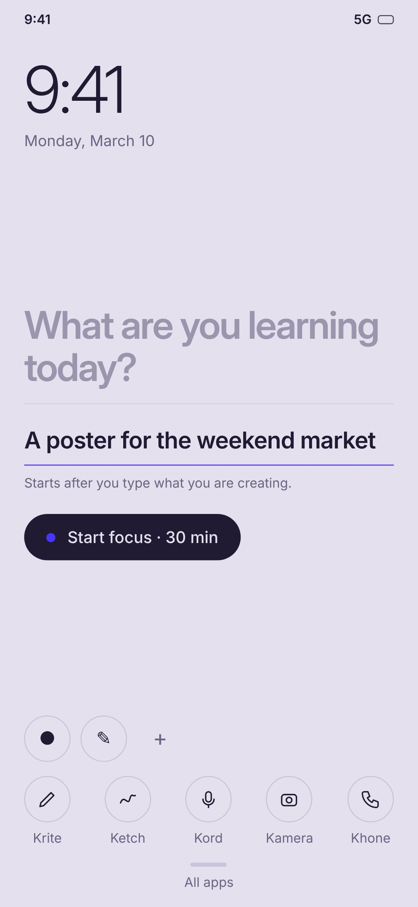
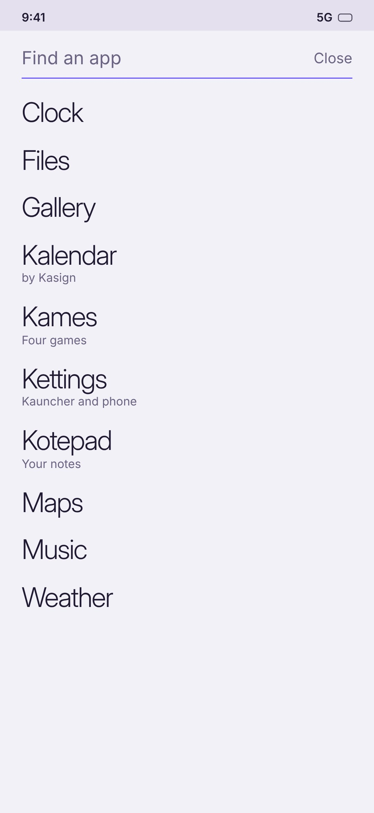
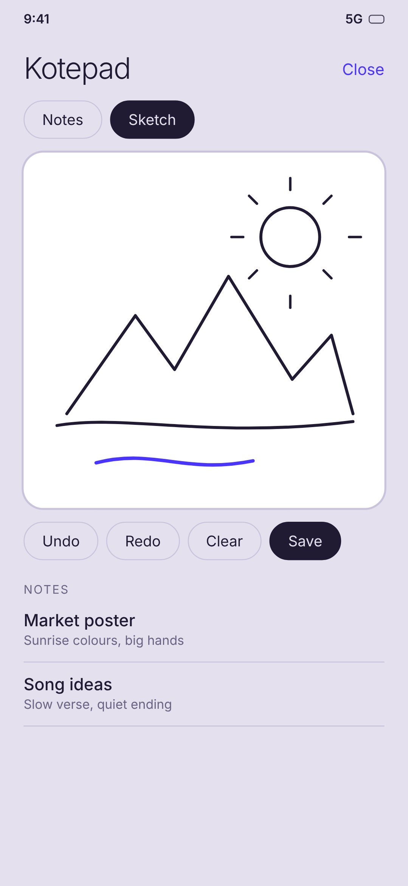
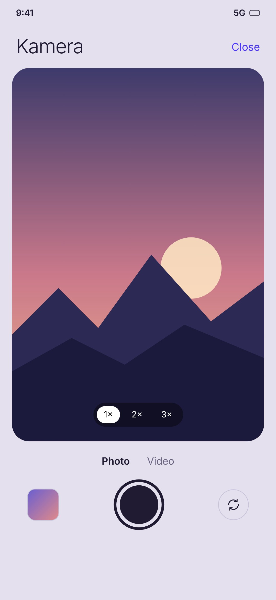
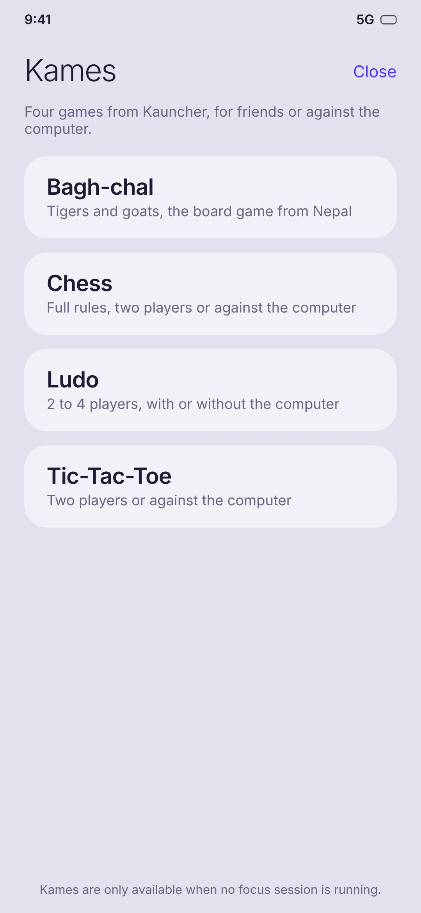
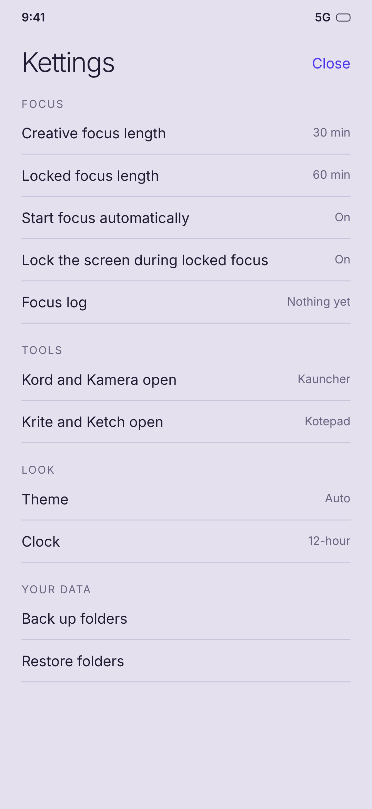
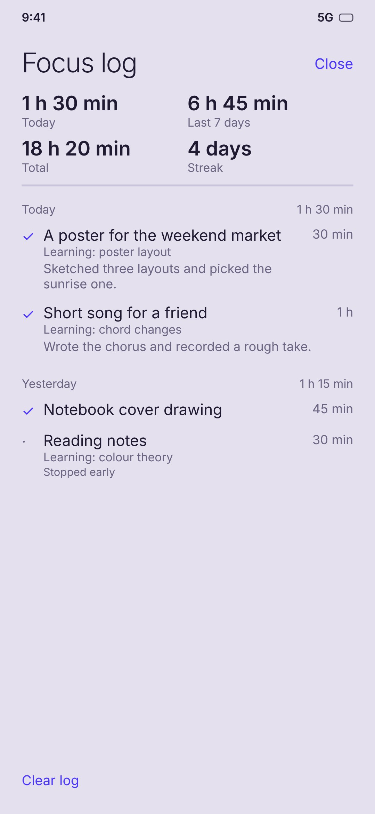

Kauncher
A calm home screen for people who make things.
See the time, write down what you’re making today, start a focus session, and reach your creative tools in one tap. Everything else stays out of the way.
- Daily focus line
- Auto 30 or 60 minute focus
- Krite, Ketch, Kord, Kamera, Khone
- Light and dark
- Kames: Tic-Tac-Toe, chess, Bagh-chal, Chungi, Ludo
- Kettings and folder backup
- Kotepad notepad
- Sunday weekly report
- Pause before apps
- Breaks and gentle sound
- Backup to a folder
- Quiet apps
- Home screen widget
- Focus sounds
- Daily intentions
- Phone time cap
- Daily app limits
- Quick capture
- Streak freeze
- Do not disturb during focus
- Add photos of what you made
- Streak on the lock screen
- Search shortcuts
- Works with Kalendar by Kasign
See it
A quick look at how Kauncher is laid out (illustrations).







Android
- Tap the button to download the APK file (Kauncher.apk).
- Open it and allow installs from this source when Android asks.
- Press Home and choose Kauncher as your default home app.
Version 4.5 · What’s new
Check your download. The SHA-256 checksum of the official Kauncher.apk is:
To compare it with your file, on Windows run certutil -hashfile Kauncher.apk SHA256. On Mac or Linux run shasum -a 256 Kauncher.apk. The two long codes must match exactly. If they don’t, delete the file and download it again from this page.
A full launcher: it lists your installed apps and replaces your home screen.
Swipe up for All apps and swipe down to come back home. Long-press an app to uninstall it or see its info.
Built in: Kotepad for notes and sketches, a camera (Kamera) and a voice recorder (Kord). Photos and recordings are kept inside Kauncher, and you can save any of them to your phone’s gallery or music folder.
During focus: everything is blocked except Khone, the phone dialer, so you can make a call. Type what you are doing in the note box and it is saved to your focus log, with the hours you worked.
Kettings: choose your focus lengths, theme and clock, see your focus log with the hours you worked, back up and restore your folders, and jump to your phone’s own settings. Tap All apps, then Kettings.
Weekly report: turn it on in All apps, then Weekly report. Every Sunday morning Kauncher tells you how long you used your phone last week, which apps you used most, how many hours you focused (with an optional weekly goal and streak), and whether your phone time is more or less than the week before. It is worked out on your phone only and is never uploaded. Android will ask you to allow Usage access first.
Calm tools: tap All apps, then Kettings, then Calm tools. Pause before opening shows a slow breathing screen for 10 seconds before apps you choose, and your weekly report counts the times you decided not to open them. Quiet apps are hidden from All apps until you search for their name. You can also long-press any app to set either one.
After a focus session: Kauncher plays a gentle sound, asks What did you make? (saved to your focus log and your Sunday report), and offers a 5, 10 or 15 minute break. You can turn each of these off.
Automatic backup: choose a folder once and Kauncher keeps one backup file there with your folders, notes, sketches and focus log, then updates it when you leave the app. Restore it any time from the same screen.
Kames: Tic-Tac-Toe, chess, Bagh-chal, Chungi and Ludo, for friends, against the computer or on your own, and Kames remembers your wins and best scores. Tap All apps and open Kames. It is only available when no focus session is running.
Progress at a glance: your home screen shows today’s focus time and your streak. A small widget with the same two numbers can be added to any other home screen that supports widgets. Tap Today’s intentions to pick up to three things to make today and tick them off. They show in your focus log and your Sunday report.
Focus sounds: in Calm tools choose rain, a ticking clock or soft noise to play quietly during a session. The sounds are made by your phone, so Kauncher still needs no internet permission.
Phone time cap and app limits: in your weekly report set a daily cap such as 4 hours. Sunday’s report tells you whether you stayed under it, and a gentle nudge appears the day you pass it. In Calm tools (or by long-pressing an app) give any app a daily limit, such as 30 minutes. After the limit, the pause screen shows every time you open it, and your report counts how often. Both use Usage access, on your phone only.
Quick capture: tap Krite to start a new note straight away, or hold Kord to start recording straight away.
What you made: most work is made away from the phone, so after a session (or from the weekly report) you can add a photo or file of it. Photos are shrunk and kept inside Kauncher, and the weekly report shows them as a small gallery. They are not included in backups.
Streak freeze: one missed day does not break your streak, at most once a week. You can turn it off. Pause screen: when you pause before an app, it reminds you of your next unticked intention for the day.
Do not disturb during focus (optional): Kauncher asks Android for Do Not Disturb access, silences interruptions while a session runs, and puts your old setting back when it ends. Streak on the lock screen (optional) draws your streak as your lock screen wallpaper, replacing the current one.
Search shortcuts: in All apps type n buy milk to save a note to Kotepad, or t 20 to start a 20 minute timer in your phone’s clock. In Calm tools you can also hide the focus line or the intentions line on the home screen.
Permissions: Kauncher still has no internet permission. The optional extras above use Usage access, Do Not Disturb access and the phone’s timer.
Seeing a Play Protect warning? That’s normal. Kauncher isn’t on the Play Store yet, and Google shows this for any app from a new developer. Tap More details, then Install anyway. Only install it if you trust this site.
iPhone
- Open the web app in Safari.
- Tap the Share button, then Add to Home Screen.
- Open Kauncher from its new icon.
iPhone doesn’t allow custom home screens, so this works as a focus screen with shortcuts to your apps.
Kotepad
A calm, simple notepad. Write or draw anything and it is saved on your device. Works on any phone or computer. In the Kauncher app, Krite and Ketch open Kotepad, where you can type notes or draw sketches. Your notes and sketches are included when you back up.
Open KotepadKames
Five games in one place: Tic-Tac-Toe, chess, Bagh-chal, Chungi and Ludo. Play against the computer, with friends or on your own. Choose a game to play online in your browser, or find Kames in All apps in the Kauncher app.
Play Kames onlineKord and Kamera
Kord is a calm voice recorder and Kamera is a calm camera for photos and video. Use them in your browser on any phone or computer. Your recordings and photos stay on your device. In the Kauncher app they are built in.
Open Kord Open KameraWe suggest Mojeek
The alternative search engine that puts the people who use it first.
Get MojeekKauncher shows Mojeek once when you first open it, and keeps it in All apps until you install it.
Kalendar by Kasign
Also from us: a calendar app that works offline. Kauncher lists it in All apps, so it is one tap away once installed.
Get Kalendar